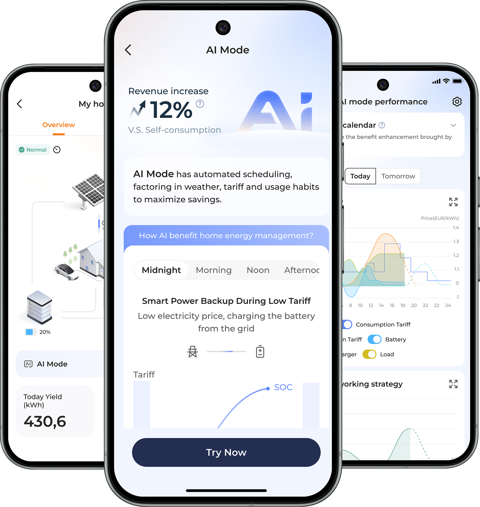
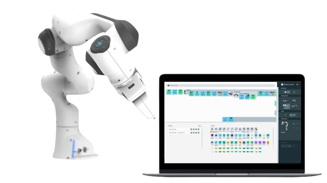

AI for energy management system
Renewable Energy Manufacturing / 2025

Hello there!
I create digital interfaces that connect people with advanced technology.
My work focuses on making complex systems intuitive, empowering, and deeply human.
My Work
Renewable Energy Manufacturing / 2025

Renewable Energy Manufacturing / 2025

Renewable Energy Manufacturing / 2025

Automation Machinery Manufacturing / Case study

How I Design
About
My path started about ten years ago, when I decided to study Industrial Design at university. That is where I first discovered how design shapes the way people experience the world.
After graduating, I shifted from physical product design to digital experiences, always driven by the idea of bridging the gap between the physical and digital worlds.
For the past four years, I have worked in hardware and software integration companies, collaborating with cross-functional teams to turn complex technology into something people can truly understand and enjoy using.
After six years working in design, I have focused my work on improving how people interact with technology, finding better ways to connect design, engineering, and business. I am passionate about creating products that feel intuitive, human, and meaningful.